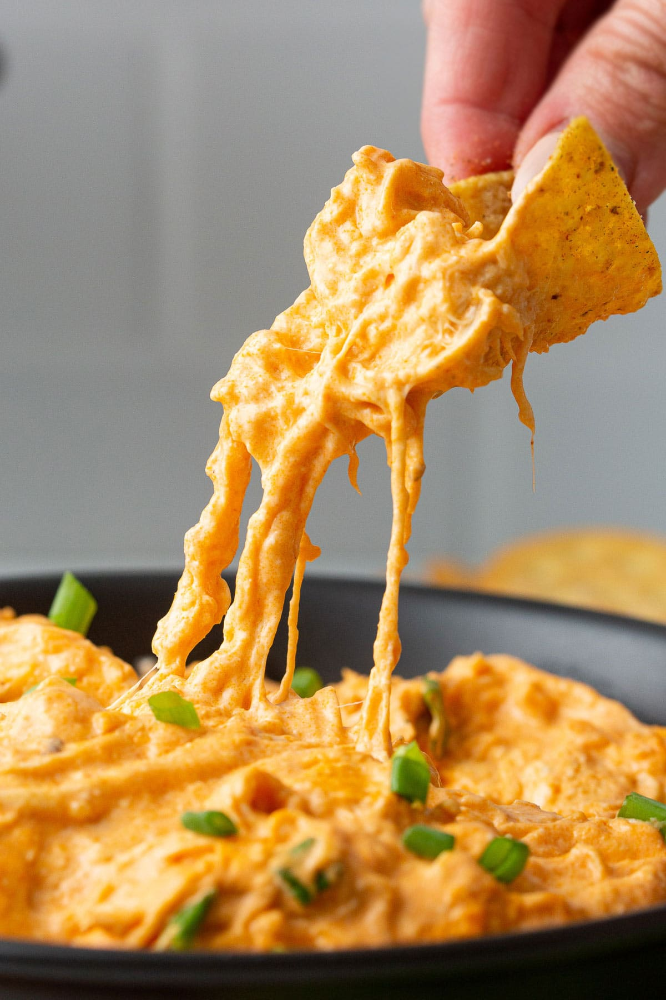

Chicken Wing Dip

Ingredients
- 2(8 ounce) packages cream cheese, softened
- ¾ cup hot pepper sauce
- 2 cups diced cooked chicken
- 1 cup Ranch-style salad dressing
- 1 cup shredded Cheddar cheese
Steps
- Preheat the oven to 350 degrees F (175 degrees C).
- Mix cream cheese and hot pepper sauce together in a medium bowl until well blended; stir in chicken, dressing, and Cheddar cheese. Spread into a 9x13-inch baking dish.
- Bake in the preheated oven until bubbly, about 30 minutes. If oil collects on the top, dab it off using a paper towel.